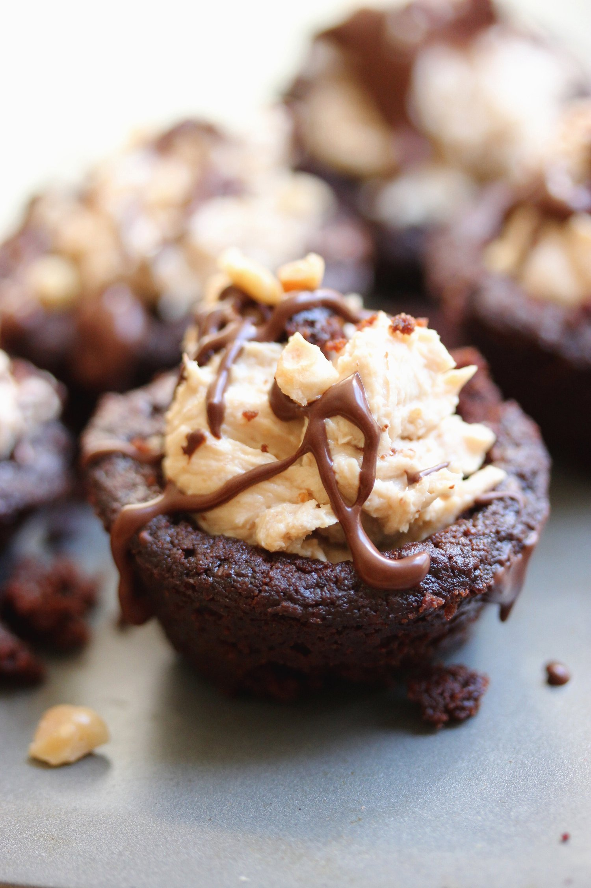
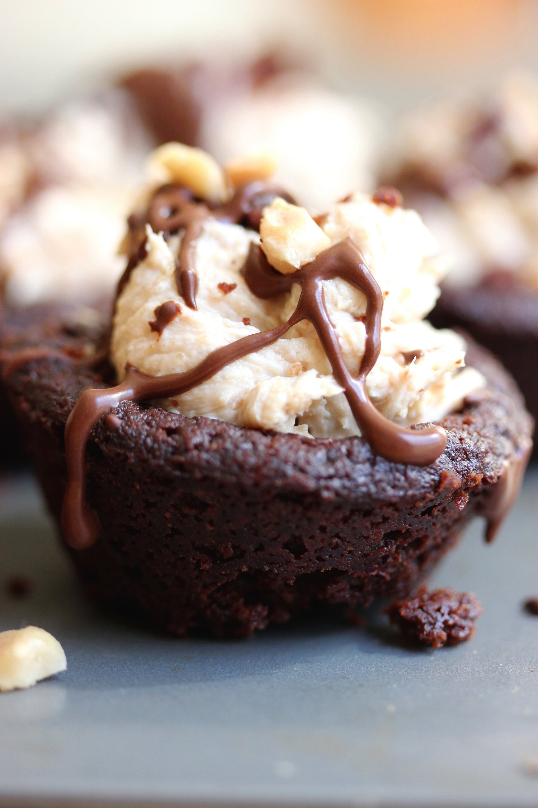
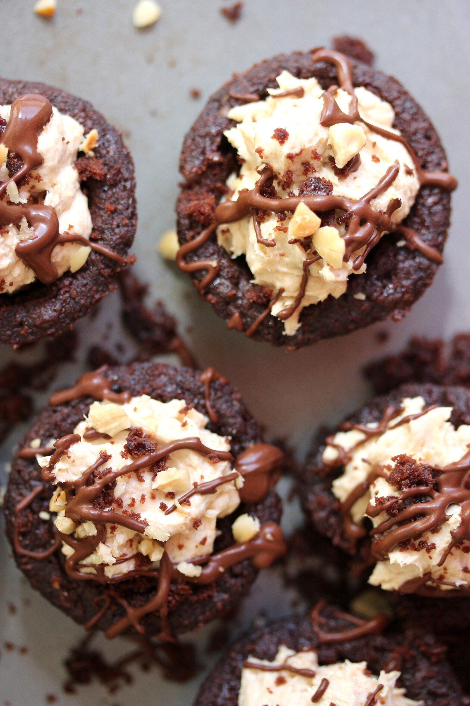
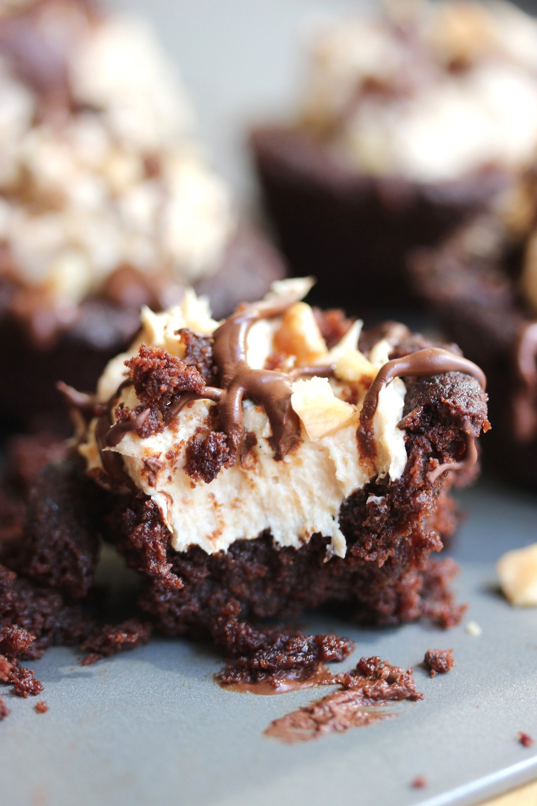

Peanut Butter Cheesecake Brownie Cups - 6 DELICIOUS VEGAN PEANUT BUTTER RECIPES





Do not fret, these truly decadent cheesecake brownie cups are here to complete your day. These bite-sized brownies have that perfect exterior brownie crust and are filled with a sweet, smooth peanut butter cream. Trust me, you deserve this vegan, gluten free, and refined sugar free treat.
This recipe is part of a collection of 6 peanut butter themed recipes by some really great bloggers. Why peanut butter? Well. 1 - Why NOT peanut butter? 2- March is National Peanut Month! Celebrate with us by making some vegan peanut butter treats!! The other 5 recipes are at the end of this post.
Let's break down this sweet, sweet dessert layer by layer. The base is a rich, decadent brownie perfect for transporting deliciousness to your mouth. The texture is great because the exterior is lightly crisp while the interior remains dense and satisfying. It can't get any better than that for a brownie.
Now, the next layer is the peanut butter cheesecake filling. Each component just gets better and better, I swear. This filling is creamy and thick. First you're hit with the creaminess, and then you're left with the nutty flavor of the peanut butter. I could eat bowls of this filling. Andddd...I probably will. Right now. Good idea Kim.
Lastly, these scrumptious peanut butter cheesecake brownie cups are topped off with crushed peanuts and a healthy chocolate drizzle. The flavors and texture combine to provide a purely magical experience. I love that these are miniature cups. They make for an easy, small burst of sweet to cure any craving. The catch 22 with that, though...is that then I'm like "well, it was small. I can have another. And another. Just one more?" and then lo and behold... They're literally all gone. All of them. Whoops.
These decadent peanut butter cheesecake brownie cups are vegan, gluten free, and refined sugar free. They are a perfect bite-sized treat to end your day on a high note. :)
If you're looking for more amazing peanut butter recipes for National Peanut Month, check out the other 5 vegan recipes at the end of this post. Every single recipe is to DIE for.
Peanut Butter Cheesecake Brownie Cups
Makes: 10 Brownie Cups
Brownie Cups
-
1/4 cup all purpose flour
-
1/4 cup unsweetened cocoa powder
-
1/4 tsp baking powder
-
1/4 cup vegan butter, softened
-
1/4 cup natural cane sugar
-
1 TBSP ground flax seeds + 3 TBSP water
-
1/2 tsp vanilla extract
Peanut Butter Cheesecake
-
1/4 cup powdered peanut butter
-
1 TBSP water
-
1/2 cup dairy free cream cheese
-
1 stevia packet
-
Preheat the oven to 350 F. In a medium sized mixing bowl, combine the flour (use a gluten free flour blend if needed!), cocoa powder, and baking powder. Set to the side.
-
In a small bowl, whisk together the butter and sugar. Once it is mixed and has a whipped texture, stir in the flax egg (ground flax + water) and vanilla extract.
-
Slowly combine this wet mixture with the dry mixture that was set to the side.
-
Once fully combined, spray a mini cupcake tray with nonstick spray. Pour the brownie batter amongst 10 cupcake molds. Bake at 350 F for 13-15 minutes, until a toothpick comes out clean and the tops are firm.
-
Remove the tray from the oven, and use the back of a small spoon to create a small crater on the top of every brownie cup while still warm. You will fill this with the cheesecake mixture later. Let the brownie cups cool for 10-15 minutes.
-
While the brownies are cooling, make the cheesecake filling. Lightly stir together the powdered peanut butter (such as pb2) with water. It won't be fully mixed; this is okay. Add the cream cheese and stevia packet, then use a handheld immersion blender or whisk to mix everything together. It should be fairly thick and whipped like a cheesecake is.
-
Fill each brownie cup with the peanut butter cheesecake filling. Enjoy!
5 More Delicious Vegan Peanut Butter Recipes
-
Chocolate Chunk Coconut Peanut Butter Oatmeal Cookies from Love Me, Feed Me
-
Peanut Butter Blondie Brownies from Healthy Helper
-
Peanut Butter Banana Chai Scones from Athletic Avocado
-
Raw Peanut Butter Banoffee Tarts from Choosing Chia
-
Peanut Butter Chunk Nice Cream from Feasting on Fruit